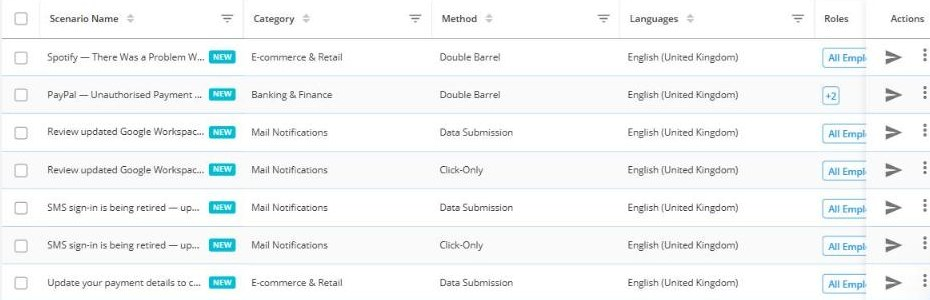
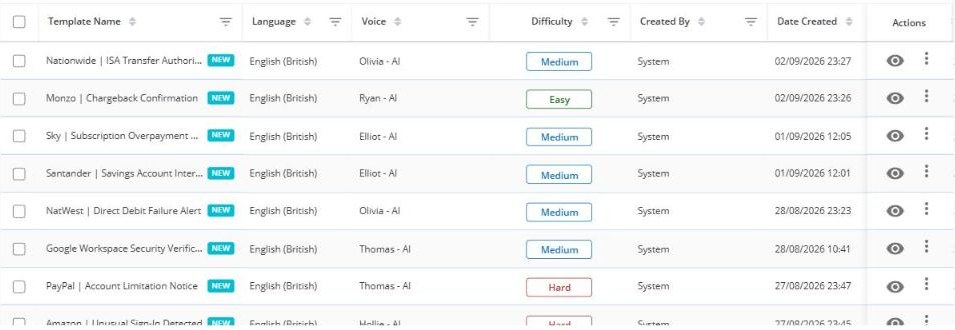
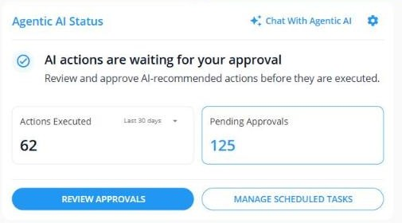

Trusted by security teams around the world


Your gateway already filters email. The attacker moved to the handset. Keepnet runs the simulation on every channel a person can actually be reached on, then scores each channel separately so you can see where the risk really sits.
No credit card. Run a baseline on your own channels in the first session.
Not. Canli formda 5 Eylul gecesi zorunlu alan sayisi 8 den 5 e indirildi (telefon, ulke ve kaynak sorusu istege bagli oldu, ulke temsilci atamasi icin zorunlu birakildi). Ayrica cerez rizasi reddedildiginde reCAPTCHA yuklenmeme sorunu giderildi, form artik her durumda gonderilebiliyor.
The gap
Email is the channel every programme simulates. It is also the channel where people are already the most careful.
If your programme only reports an email click rate, you are reporting the safest number in the building. The phone is where the failure rate climbs, and it is the one channel almost nobody simulates.

Verizon 2026 DBIR, p. 50.
What makes Keepnet different
Each one below is a capability you can see in the product on the first call, not a claim.
One button in Outlook and Gmail, and a mobile app that reports a suspicious text or a suspicious call into the same analyst queue as email.
Available on the App Store todayA scenario that walks the target through a real MFA prompt, on email and on SMS, so you can see who hands over the second factor.
A scenario method in the productScenarios and follow-up training are selected by behaviour, role, department, level and language before anything is sent.
Ten filters, applied automaticallyA failed simulation triggers the matching module within minutes. No annual batch, no waiting for the next training window.
Assignment within minutes of the failureThe agent proposes the campaign, the audience and the follow-up. You either let it run or hold every action for approval.
Pending approvals queue in the dashboardDifficulty escalates for repeat failures instead of resending the same test, following behavioural science rather than a fixed calendar.
Easy, medium and hard scenario levels89 languages and locales, including nine English variants and separate Canadian, Belgian and Swiss French.
Counted in the platform, not estimatedA lure that works in Sao Paulo is not the lure that works in Osaka. Scenarios are localised per market, not run through a translator.
Locale-specific scenario variantsOver 10,000 items behind the simulation, so the person who fails gets a real module rather than a generic warning page.
Six material types, plus your own SCORMHow it works
The point is not to catch people out. The point is to find the channel where your organisation is actually exposed.

Time to value
There is nothing to install before you can test. Import the target list, pick a scenario per channel, schedule it. The reporting add-in and the mobile app roll out in parallel, they are not a prerequisite.
The scenario library
Not just how many templates, but how many ways a scenario can behave and how many markets it can behave that way in.
| Method | What the target is asked to do | What it proves |
|---|---|---|
| Click-only | Follow a link | Baseline curiosity and urgency response |
| Data submission | Enter credentials on a landing page | Who would actually hand over a password |
| Attachment | Open a file | Behaviour your gateway cannot see once the file is local |
| MFA capture | Approve or enter a second factor | Whether MFA survives a determined lure |
| Double barrel | Reply to a harmless first message, then act on the second | Conversation-based attacks that single-message tests never catch |

Voice
Voice simulation is where most platforms stop at a recorded message played inside their own interface. Keepnet places a call, in the target's language, with a chosen AI voice, and scores what the person does on the phone.
Reporting a threat
Reporting maturity stayed on email while the attacker moved to the handset. If an employee gets a suspicious text or a suspicious call, most organisations have no route for them to report it at all.
| Channel | Simulate | Employee can report from |
|---|---|---|
| Yes | Outlook and Gmail add-in | |
| SMS | Yes | Mobile app |
| Voice | Yes | Mobile app |
| QR code | Yes | Mobile app |
| Callback | Yes | Mobile app |
| MFA capture | Yes | Reported as a phishing attempt |
All five land in one analyst queue, so a smishing text and a phishing email are triaged in the same place.

One risk score per channel, produced in a single workflow.

What happens after the report
A report button only helps if someone can triage what comes back. Every reported message is checked against the sandboxes and reputation services you already run, then classified by attack type.
Compliance
Simulation results and the training that follows can be reported by framework, not just by campaign.
Proof
Estimated annual saving attributed to the awareness programme after moving to behaviour-based assignment.
Improvement in reporting and reduction in risky action across the first year of the programme.
Value of the incidents prevented over the measured period in a retail environment.
FAQ
It places a real call to the employee's phone, in their language, using a selected AI voice and a scenario such as an HR contact or a national ID request. The result is scored like any other simulation, and anyone who gives up information is enrolled in the matching module.
Yes. MFA capture is one of five scenario methods, alongside click-only, data submission, attachment and double barrel, and it is available on both email and SMS scenarios.
The target receives a harmless first message and only the second message carries the lure. It reproduces conversation-based attacks, which single-message tests never catch.
Yes. The Keepnet Reporter is a button in Outlook and Gmail for email, and a mobile app for SMS and voice. All of them land in the same analyst queue.
89 languages and locales. That count includes locale variants that are built separately rather than translated, such as nine English variants and separate Canadian, Belgian and Swiss French.
Yes. Reported mail is enriched through sandboxes and reputation services such as FortiSandbox, Google Safe Browsing, Google Web Risk and Spamhaus before an analyst opens it, and results can be pushed to your existing SIEM or SOAR.
Yes. Many teams keep their existing email-only programme and add Keepnet for the channels it does not cover, then consolidate once the per-channel scores make the case.
Pricing is per user and depends on the modules you run. Current plans and per-user pricing are on the pricing page.
Thirty minutes. We build a multi-channel campaign with you, show the per-channel scoring, and you keep the baseline whether or not you buy anything.
Book a 30-minute demo